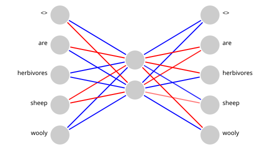
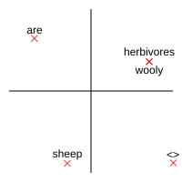

In these articles I'm going to work through building a AI model to generate sentences in a similar way to large language models (LLMs). Mine will be a lot smaller and simpler, so I'm calling it a small language model. I hope that by keeping it simple it will be easier to understand how exactly LLMs work in principle.
One way I'm going keep things simple is by using a stripped down version of English. I want to imagine some primitive cave people trying to describe their world, and creating an AI that learns to use their language. The language will use English words, but only a very small vocabulary and simple sentence structures.
Starting sentences
In the beginning, our cave people look out at the world and see some sheep. They are able to describe them with two sentences. These are the only possible sentences they can say.
- Sheep are herbivores
- Sheep are wooly
Don't worry that 'herbivores' and 'wooly' are not particularly simple words; the actual words don't matter. The point is there are only two possible sentences, and they have simple Noun - Verb - Adjective structure. Can we make an AI that learns to generate these sentences?
Tokenisation
In order to generate a sentence, we will create an neural network that learns to predict the next word in a sentence. The first step is to split the sentences into individual words. We also add a special token to indicate the start and end of a sentence, which will be useful later. I've used <>, but it doesn't matter what it is as long as it won't appear in a sentence.
The sentences become lists of tokens:
- <>, sheep, are, herbivores, <>
- <>, sheep, are, wooly, <>
Neural network
The neural network will take in one word (token) at a time, and try to predict the next word. So we have one input node for every token and one output node for every token. In the middle we have a hidden layer of two neurons to help learn patterns. Each node in the network is connected to every node in the next layer.
I won't explain how the neural network learns in detail here, but it involves adjusting the weights of the connections between nodes based on errors in its predictions. There are many good explanations online, such as 3Blue1Brown's Neural Networks series. My code for this example is available on Github.
After training on these two sentences, with 100 000 repetitions, the neural network looked like this, where blue indicates a positive weight and red a negative weight.

Embeddings
If you looks at the weights between the input layer and the hidden layer, you can see they are different for each word, except for 'herbivores' and 'wooly'. This is because both words always appear in the same context (after 'sheep are'), so the neural network has learned to treat them the same.
- <>: Blue, Red
- are: Red, Blue
- herbivores, wooly: Blue, Blue
- sheep: Red, Red
In effect, the network has encoded the words as a vector of two numbers. This is a very simple form of word embedding. Instead of needing a separate representation for each word, we can represent each word as a point in a two-dimensional space. Words that appear in similar contexts end up close together in this space.
Plotting the weights in the two-dimensional space gives us a visual representation of the word embeddings.

Each word (token) is represented as a one-hot encoded vector. For example, with our vocabulary of five tokens (<>, sheep, are, herbivores, wooly), the word 'sheep' would be represented as [0, 1, 0, 0, 0]. This is a sparse representation, where only one element is 'hot' (1) and the rest are 'cold' (0). The neural network learns to map these one-hot vectors to a smaller dense vectors in the hidden layer, which capture semantic relationships between words. Now sheep can be represented as [-1.60, -4.77] in the two-dimensional embedding space.
Placeholder: Final Thoughts Section
Additional concluding remarks and call-to-action content